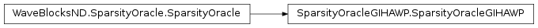
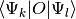
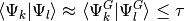
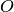

SparsityOracleGIHAWP¶
About the SparsityOracleGIHAWP class¶
The WaveBlocks Project
@author: R. Bourquin @copyright: Copyright (C) 2010, 2011, 2012, 2013, 2014, 2015, 2016 R. Bourquin @license: Modified BSD License
Inheritance diagram¶
Class documentation¶
-
class
WaveBlocksND.SparsityOracleGIHAWP(threshold=1e-08)[source]¶ This class implements an oracle by looking at Gaussian integrals.
-
__init__(threshold=1e-08)[source]¶ Initialize an oracle for estimating if a specific overlap integral  is approximately zero. The oracle works by approximating
 with a Gaussian integral. If
with a Gaussian integral. If
the value is considered to be zero. Of course this may fail depending on the form of the operator  or the basis shape
 .
.Warning
This code is highly experimental.
Parameters: threshold – The threshold  in the Gaussian integral criterion.
The default value of
in the Gaussian integral criterion.
The default value of  should be reasonable in most cases.
should be reasonable in most cases.
-
is_not_zero(pacbra, packet, component=None)[source]¶ Try to estimate if the overlap integral
is zero or at least negligible.Parameters: - pacbra – The packet
 that is used for the ‘bra’ part.
that is used for the ‘bra’ part. - packet – The packet
 that is used for the ‘ket’ part.
that is used for the ‘ket’ part. - component – The component of the packet that is considered.
Returns: TrueorFalsewhether the inner product is negligible.- pacbra – The packet
-